Sử dụng VISIONAssembly để xây dựng giải pháp và dự án, quy trình chính như sau:
VISIONAssembly hỗ trợ tạo mới và mở các giải pháp đã có, đồng thời cung cấp các dự án mẫu ở cấp độ công cụ và cấp độ ứng dụng, nằm trong thư mục VISIONAssembly_x64\Samples. Khuyến nghị người dùng sử dụng các giải pháp tiêu chuẩn để xây dựng và chỉnh sửa.
Tạo giải pháp trống mới
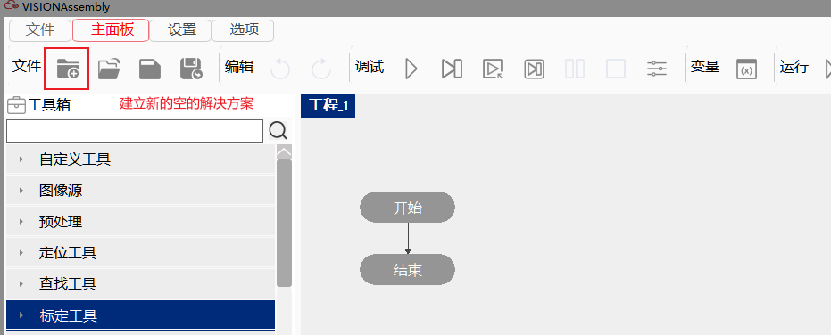
Mở giải pháp hiện có
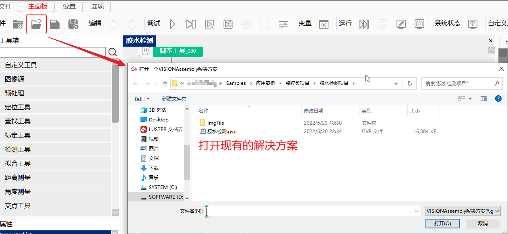
Cấu hình các tài nguyên thiết bị cần thiết khi dự án thực tế chạy, chẳng hạn như camera, cổng giao tiếp, nguồn sáng, v.v.
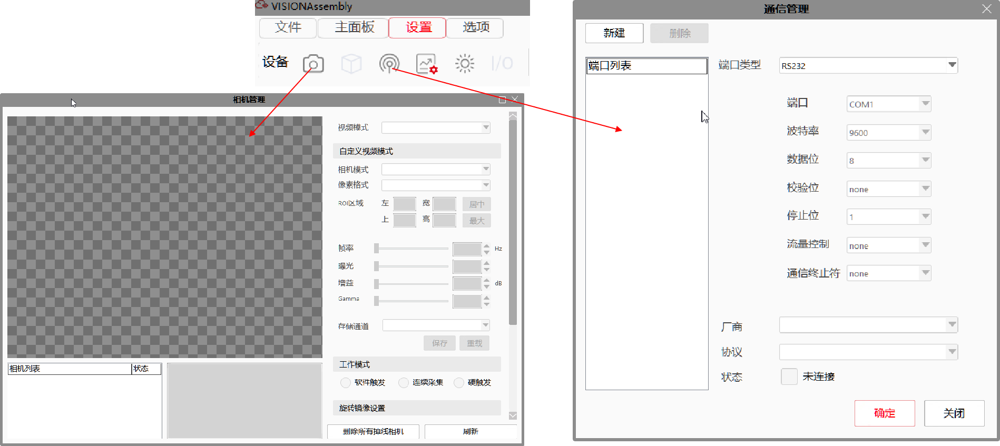
Thông tin chi tiết có thể tham khảo: Chức năng sản phẩm / Quản lý camera, Chức năng sản phẩm / Quản lý giao tiếp, Chức năng sản phẩm / Quản lý nguồn sáng
Xây dựng lưu đồ là phần chính trong toàn bộ quá trình thiết kế dự án, bao gồm logic hoạt động và dữ liệu chạy của toàn bộ dự án. Việc xây dựng toàn bộ lưu đồ được chia thành ba phần như sau:
Thêm công cụ kiểm tra
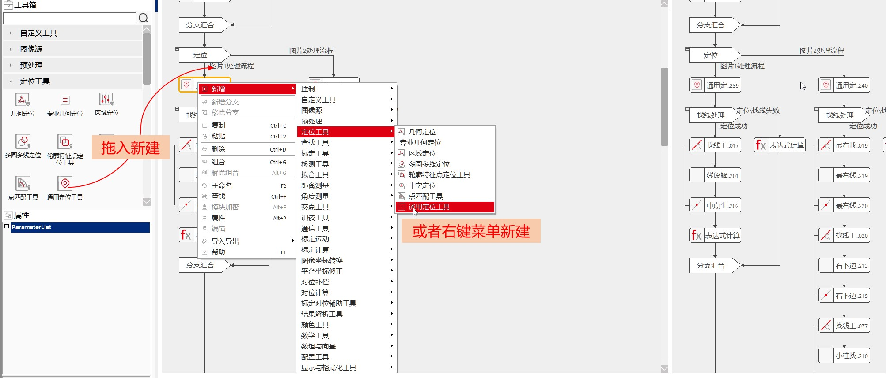
Thêm cấu trúc điều khiển logic
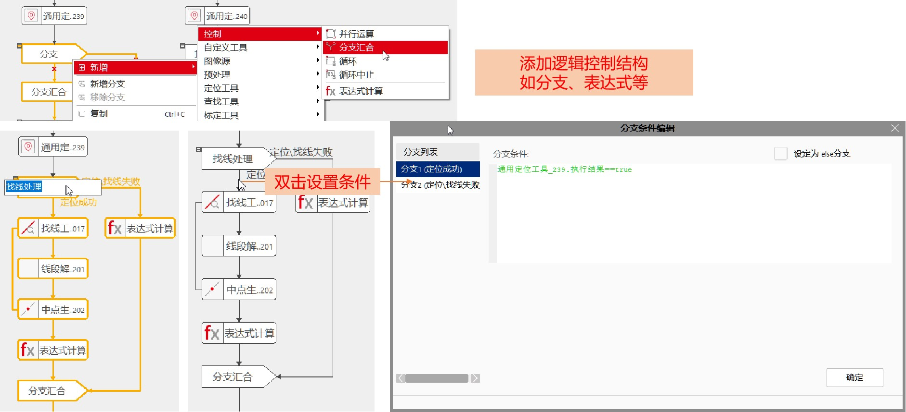
Thông tin chi tiết về điều khiển logic có thể tham khảo: Chức năng sản phẩm / Lưu đồ / Luồng điều khiển
Thêm biểu thức
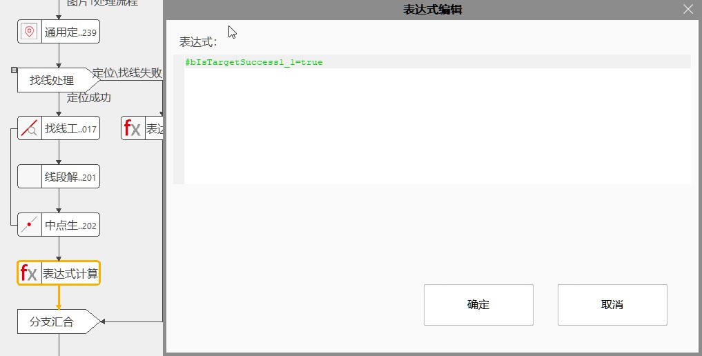
Thông tin chi tiết về biểu thức có thể tham khảo: Chức năng sản phẩm / Lưu đồ / Biểu thức
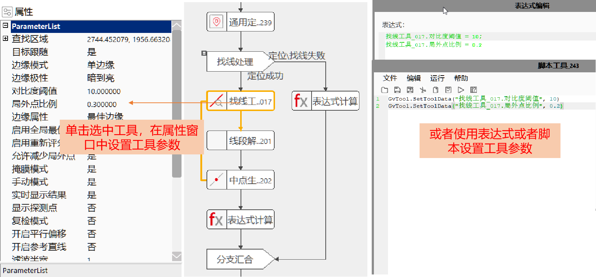
Thông tin chi tiết về cách sử dụng công cụ có thể tham khảo: Chức năng sản phẩm / Lưu đồ / Sử dụng công cụ
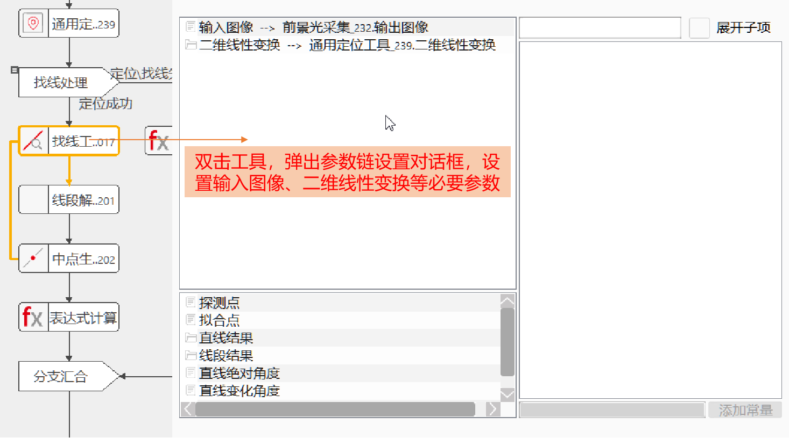
Thông tin chi tiết về chuỗi tham số có thể tham khảo: Chức năng sản phẩm / Lưu đồ / Chuỗi dữ liệu
Chạy từng công cụ hoặc một đoạn lưu đồ để xem kết quả thực thi, sau đó điều chỉnh tham số tương ứng dựa trên kết quả
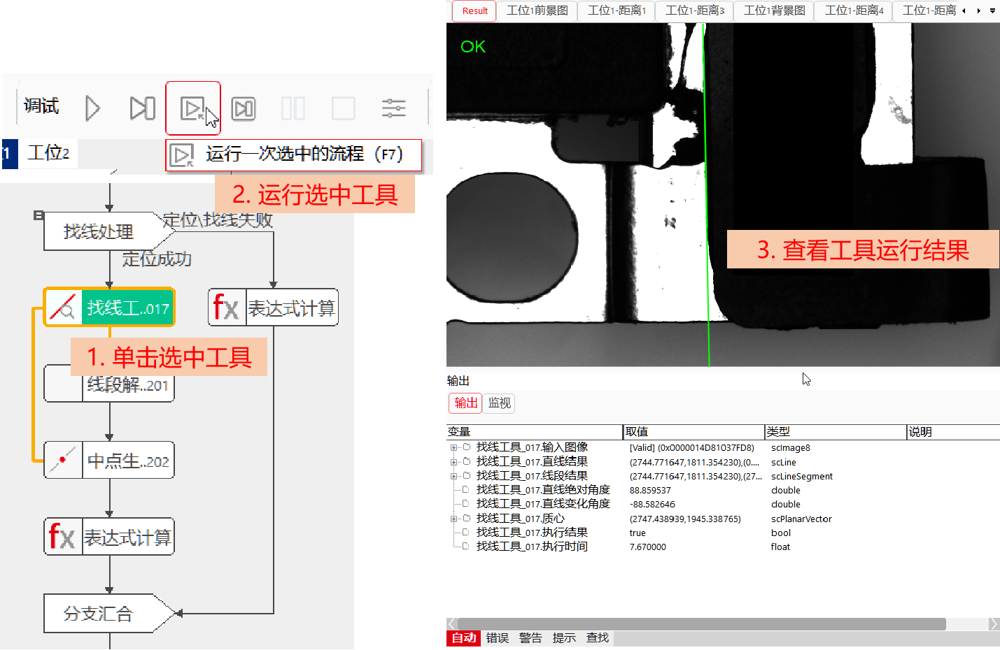
Chạy từng dự án riêng lẻ để kiểm tra quá trình thực thi của dự án, từ đó điều chỉnh logic lưu đồ hoặc tham số công cụ tương ứng
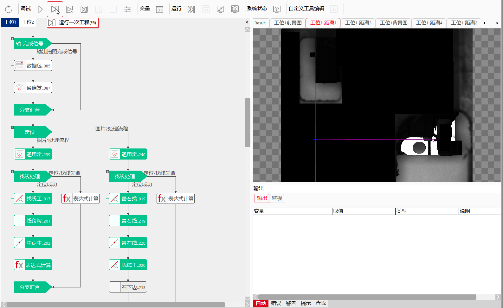
Thông tin chi tiết về chạy thử nghiệm có thể tham khảo: Chức năng sản phẩm / Lưu đồ / Gỡ lỗi và chạy
Vào phần chỉnh sửa giao diện sản xuất để thiết lập bố cục giao diện khi sản xuất. Có thể tự do thêm các điều khiển khác nhau để tạo ra bố cục mong muốn.
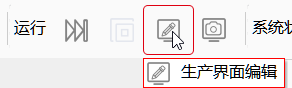
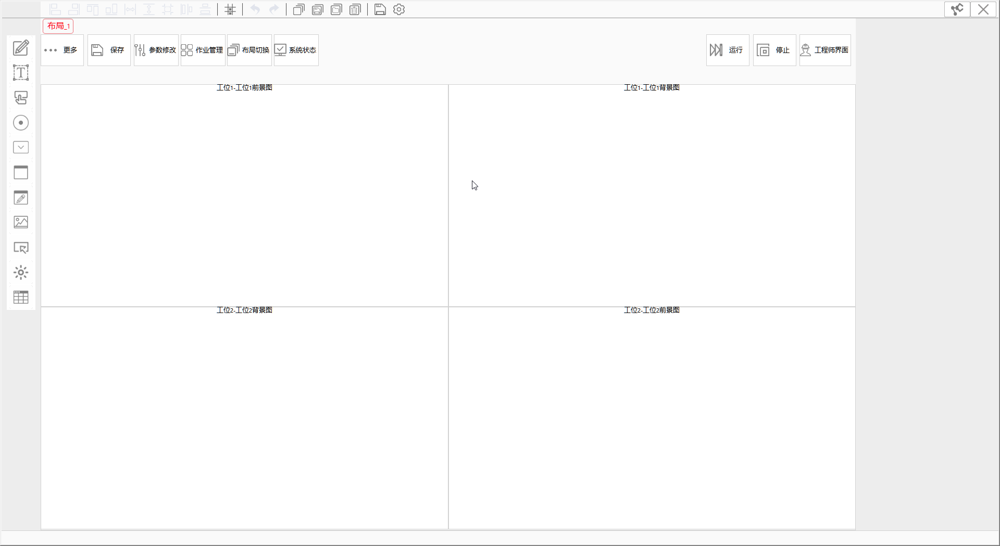
Thông tin chi tiết về chỉnh sửa giao diện sản xuất có thể tham khảo: Chức năng sản phẩm / Chỉnh sửa giao diện sản xuất
Bước cuối cùng là chạy toàn bộ hệ thống. Sau khi hoàn tất gỡ lỗi và chuyển giao sang giai đoạn sản xuất, hãy chạy toàn bộ dự án trong giao diện sản xuất để quan sát trạng thái thực thi và tình hình sản xuất.
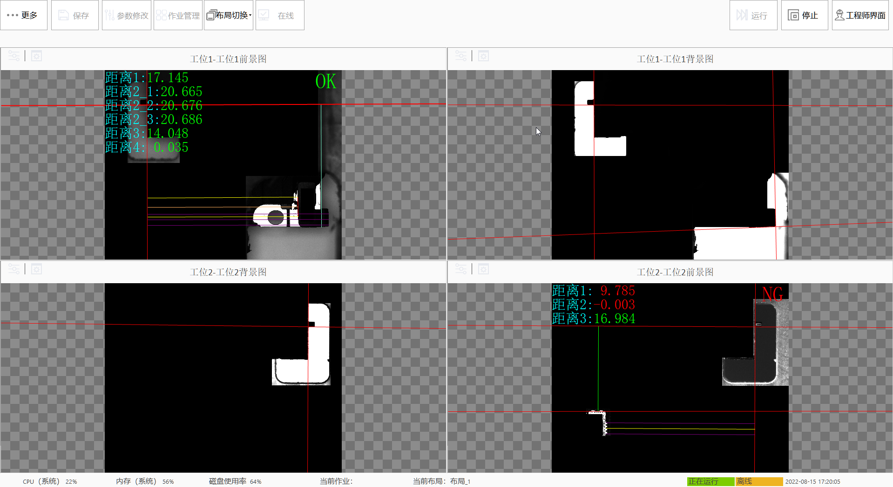